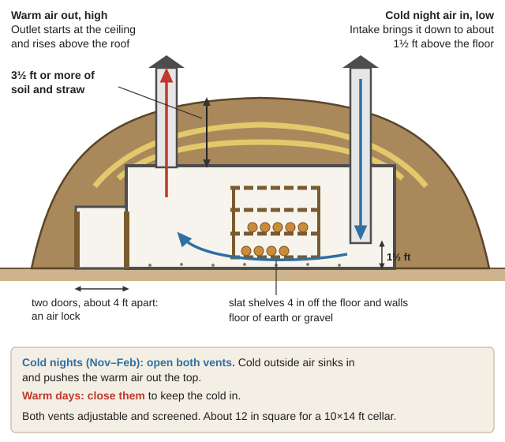
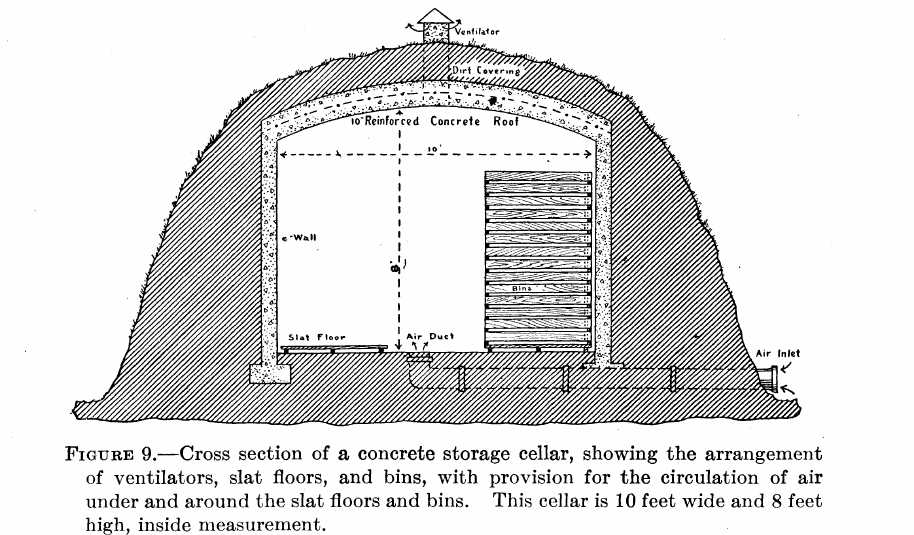
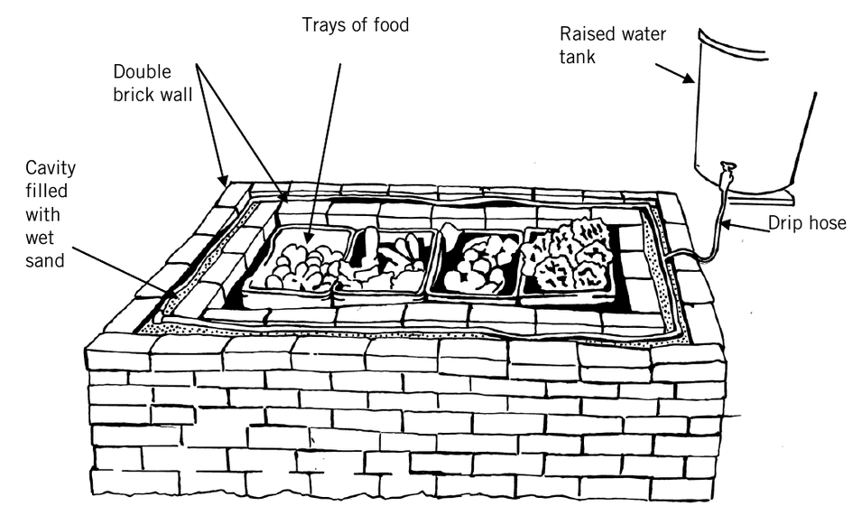

How to keep a year's harvest with no refrigerator: root cellars, storage rooms, pits and buried barrels, cooling with water and evaporation, sun and solar drying, curing and smoking meat, fermenting, and keeping eggs. The manuals are in Food-Storage\ (Root-Cellars-Pits, Cooling-Without-Power, Drying, Curing-Smoking, Fermenting-Eggs-Vinegar); canning and freezing are in Gardening-Food\.
⚠️ Rules that prevent food poisoning and losses
Low-acid food in sealed jars needs pressure canning — never "water bath" or "oven can" vegetables, meat or beans, and never can wild mushrooms. Follow the USDA canning guide exactly.
Cured meat needs exact amounts. Weigh salt and any curing salt (nitrite/saltpeter) — too little lets meat spoil, too much nitrite is poisonous. Follow one tested recipe; don't mix them.
Cold-smoked fish is not cooked. Hot-smoke fish to 150–160 °F inside for 30 minutes (PNW 238) unless it's heavily salted and dried.
Green potatoes are toxic (why) — store potatoes in the dark and cut away green parts.
Check stored food weekly. One rotting apple or potato spreads; remove it at once.
The Illinois Valley problem: warm ground
Old root-cellar books assume cold ground. Deep soil stays near the average yearly air temperature, and across most of the U.S. that's 49–58 °F; at 6 ft down clay still swings about ±11 °F through the year (MSU Earth Tempering, p. 2; ground-temperature map and chart). Here the yearly average is roughly 54 °F(rule of thumb, from Cave Junction's average highs and lows). So:
A cellar here idles around 50–58 °F. That's perfect for winter squash, pumpkins, sweet potatoes, and fine for a few weeks of most other crops.
In a 50–60 °F space, root crops keep only 3–4 weeks; packing them in damp (not wet) sand or soil cuts the shriveling, and a partitioned-off room or outdoor cellar let in to outside air about doubles the time (USDA FB 1939 (1943), pp. 29–30).
Mild winters are also an advantage: many crops can simply stay in the garden all winter (see below), so you need less cellar than people in cold country.
Potatoes: first cure 1–2 weeks at 59–68 °F in high humidity so skins toughen and cuts heal. Below about 38 °F they turn sweet; above 40 °F they sprout sooner; they freeze near 30 °F. Keep them dark. (USDA Ag Handbook 66, p. 517)
Winter squash and pumpkins: cure about 2 weeks at 80–85 °F (a sunny porch in October), then store at 50–55 °F — colder than 50 °F damages them. (USDA FB 1939 (1943), p. 30; AH 66, p. 525)
Sweet potatoes: cure about 10 days at 85 °F and high humidity (USDA FB 1442), then store at 55–60 °F — below about 55 °F they suffer chilling injury and decay (FB 1442's older 50–55 °F is too cold) (AH 66, p. 577; FB 1939 (1943), p. 30).
Garlic: keeps 1–2 months at room temperature, 9+ months near freezing (AH 66, p. 343).
Nuts: dry hazelnuts to a crisp kernel; they keep about 2 years below 50 °F (AH 66, p. 761).
Keep apples and pears away from vegetables. They give off ethylene gas, which makes potatoes sprout and carrots bitter; onion and potato smells taint apples (Canada Pub. 1260, p. 16; Pub. 1478, p. 4).
Drainage first. Pick a slope or high ground. On the wet valley floor, build at or above ground level and heap earth over it rather than digging into a winter water table; lay a drain pipe along the footings (Novia, pp. 8–9; plan and section drawings).
Earth cover: at least 3½ ft of soil and straw over the roof (layers of ~6 in straw and 8–12 in soil), carried well past the sides. Add soil as the straw rots.
Intake: brings outside air down to about 1½ ft above the floor.
Outlet: starts at the ceiling and rises well above the roof (warm air leaves high).
Both adjustable, and screened against rodents and insects.
Double doors about 4 ft apart act as an air lock. Face the door north and keep it shaded so summer sun doesn't heat it (Novia, pp. 13–14).
Floor of earth or gravel — it holds moisture. Shelves of slats 4 in off the floor and walls so air moves around everything.
A thermometer and a humidity gauge inside (or a wet rag test: if things shrivel, it's too dry — sprinkle the floor).

Night venting: open both vents on cold nights so cold air pours in low and warm air leaves high; close them on warm days (a diagram drawn for this guide).

The same idea in a USDA plan: air comes in under the slat floor and leaves through the ventilator at the top (USDA FB 1939 (1943), p. 14).
Simpler options:
Basement-corner storage room: about 10×10 ft with an outside window. Insulate the two inside walls and the ceiling (vapor barrier on the warm side), and run an intake duct from the window down to about 18 in above the floor (Pub. 1478, pp. 8–12; perspective view; cross-section).
Pits, clamps, buried barrels — and the garden itself
Cone pit (USDA FB 1939 (1943), p. 16; cross-section): on well-drained ground, dig 6–8 in deep, line with straw or leaves, pile the vegetables in a cone, cover with straw, then 2–3 in of earth, thickened as winter comes. Leave a tuft of straw sticking out the top as a vent and cap it with a board. Open a pit all at once and use a new spot each year (FB 1939 (1960), p. 9).
Clamp (long mound) for potatoes: a straw bed, a vent duct along the bottom, about 8 in of packed straw and up to 12 in of soil; in mild climates use more straw and less soil (FAO Prevention of Post-Harvest Losses; clamp drawing).
Buried barrel or trash can: a clean food-safe barrel laid in the ground on a slant so water runs out, mouth facing the path, covered with straw and earth (USDA FB 1939 (1943), p. 18; barrel pit; buried trash can). Line or wrap it with ¼-inch hardware cloth against gophers and voles (rule of thumb).
A cone pit: straw around the vegetables, earth over the straw, a straw vent up the middle capped with a board, and drains around it (USDA FB 1939 (1960), p. 9).
Springhouse: water from a spring or deep well sits near ground temperature — about 52–55 °F here(rule of thumb). Run it through an insulated tank or a shaded stone trough and stand crocks, milk cans and butter in it (USDA FB 976; insulated cooling tank). See springhouse.
Evaporative cooler — made for our dry summers: a screened cabinet covered in flannel or burlap, kept wet by wicks from a pan of water on top, in shade and breeze. In hot, dry weather it can hold about 50 °F inside; it works poorly in humid weather (USDA The Iceless Refrigerator). Bigger versions use a wall of wet charcoal, or a double brick wall with wet sand between (about 400 bricks keeps 220 lb of produce), wetted twice a day (Practical Action Evaporative Cooling, p. 2; charcoal cooler; brick cool chamber). The clay-pot zeer is the small version (Homestead-Skills\Food-Crafts-Tools; how it works; pot sizes).
Ice house: ice packed in at least 15 in of sawdust on all sides, on a drained floor, keeps through summer (USDA FB 475, pp. 6, 12–13; insulation diagram). Valley ponds rarely freeze thick, but the bulletin shows freezing ice in metal cans on cold nights. Realistically a small ice store is a winter-only luxury here.

The brick cool chamber: keep the sand between the two brick walls wet and the food inside stays cool (Practical Action, p. 3).
Our hot, dry late summer is ideal drying weather. Sun drying needs about 90 °F, low humidity and clean air; dependable drying needs several days in a row near 95 °F (PNW 651, p. 16).
Trays: wooden frames with food-safe screen (not galvanized); cover with cheesecloth or netting against insects; bring trays in at night so dew doesn't re-wet the food (USDA FB 984, pp. 13–14; screened solar drier).
Is it dry? Fruit is leathery with no moist center (photos); vegetables are brittle. Squeeze a handful of fruit: it should spring apart "like rubber bands." Then condition it at least 2–4 days in a covered jar, shaking daily — if moisture beads up, dry it more (USDA FB 984, p. 47; PNW 651, pp. 17–19).
Don't dry outdoors in wildfire smoke — ash settles on the food (rule of thumb).
Dry-cured country ham and bacon keep without refrigeration once cured, smoked and aged.
Cure in the cold season: meat must stay 36–40 °F for the whole cure — warmer risks spoilage, colder stops the salt from soaking in (USDA Curing Pork Country Style, p. 5). Here that means December–February, in a cellar or shed vented on cold nights. Carver's bulletin covers curing where winters are too warm (Carver 1912).
Smoke with hardwood (never pine) at 100–120 °F for cured pork (Leaflet 273, p. 8). A barrel smoker at the top of a sloping covered trench, fire at the bottom, is the simplest smokehouse (USDA AWI-68; firebox plan).
Sauerkraut:2½% salt — 1 lb salt to 40 lb cabbage (about 3 Tbsp per 5 lb); pack in a crock (crocks and jars), weight it so brine covers the cabbage, skim scum. Ferment 3–4 weeks at 70–75 °F or 5–6 weeks at 60–65 °F; below 60 °F it may not ferment, above 75 °F it goes soft (USDA FB 1438, p. 14; USDA canning Guide 6). Old bulletins say 86 °F and paraffin seals — don't.
Eggs for months (USDA says 6–9, FAO only 1–6; plan on the shorter — see the Preserving guide): fresh, clean, uncracked spring eggs in a crock of 1 quart water glass (sodium silicate) to 9 quarts boiled, cooled water, with 2 in of liquid over them; or clear lime water. Prick the shell before boiling (USDA Home Methods of Preserving Eggs).
Grain, beans and dried food in metal or glass with tight lids. Freeze dry beans and grain 2–3 days, warm them a day, then freeze again (freezing alone misses some eggs), or heat them, to kill weevils — not the old chemical fumigants (USU, p. 95).
Cats, traps and tidiness — no open feed, no clutter for nesting.
A storage year in the Illinois Valley (rule of thumb)
Month
Do this
Aug–Sept
Sun-dry fruit, tomatoes, beans and herbs. Cure onions and garlic in shade, then braid or bag.
Oct
Cure winter squash and pumpkins on a sunny porch, then into a 50–55 °F room. Cure potatoes 1–2 weeks, then into the dark.
Nov
Start night-venting the cellar as nights drop into the 30s. Move apples, potatoes, carrots, beets and cabbage in as it cools. Mulch roots left in the garden.
Dec–Feb
Coldest stretch: cure hams and bacon; make sauerkraut slowly; check stored food weekly.
Mar–Apr
Use up cellar crops before they sprout; replant the best roots for seed (see the Seed Bank guide). Put up spring eggs in water glass.
May–July
Cellar warms toward 55 °F: dry goods, squash, canned and dried food only. Evaporative cooler and springhouse for butter, milk and greens.